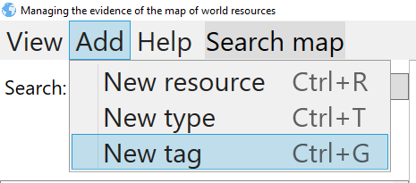
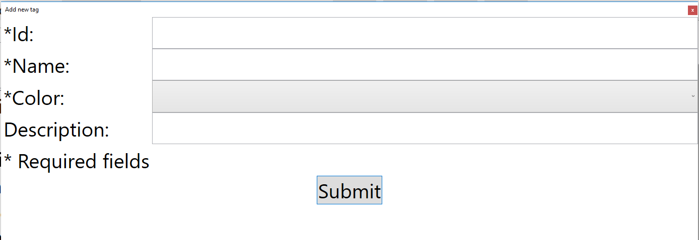
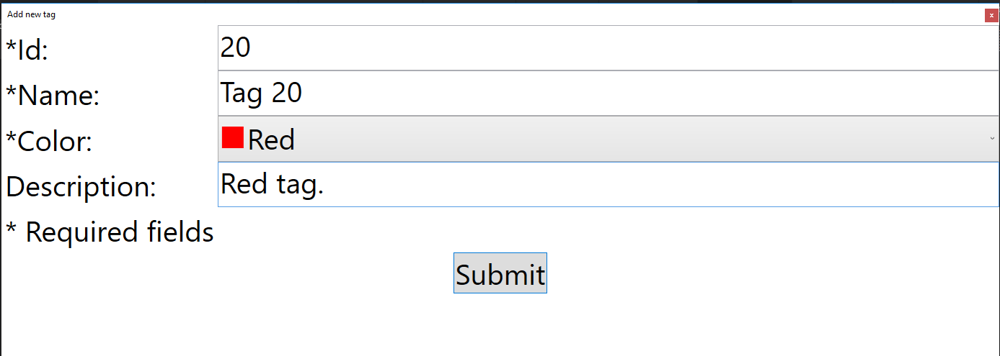

Adding new tag
You can add new tag. Process of adding should start with pressing btn add->New tag from menu bar, or by pressing shortcut key combination CTRL+G

That action will open window that looks like this:

You can type in id, name and description. Also there is option of choosing tag color.

By pressing submit button, if every field is filled and fulfils constraints, window will close and new tag will be shown in tag list when adding new resource to the map action is on.